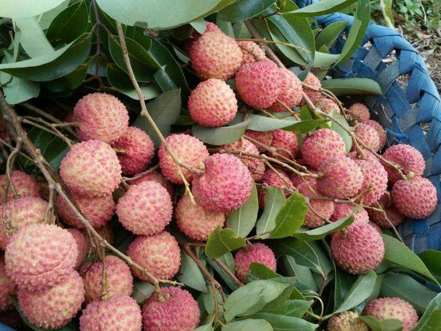
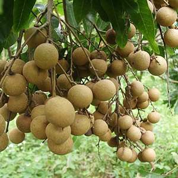

个人介绍
姓名：赵海梅
学号：201916180207
性格开朗，略带点腼腆性格，喜欢运动，听歌...家乡是广西， 想必一听到广西就会联想到螺蛳粉，螺蛳粉味道独特，它的精华在于汤料和酸笋的制作， 不管汤料还是酸笋都要很有讲究的熬制或腌制，不然吃就没了那酸爽味， 自己来到湖南发现外地人竟然把那独特的味道称之为"臭",真是不可思议。 除了螺蛳粉广西还有很多特产，比如龙眼，荔枝，甘蔗...... 每到秋收都会看到忙碌的人在顶着大太阳劳作。

